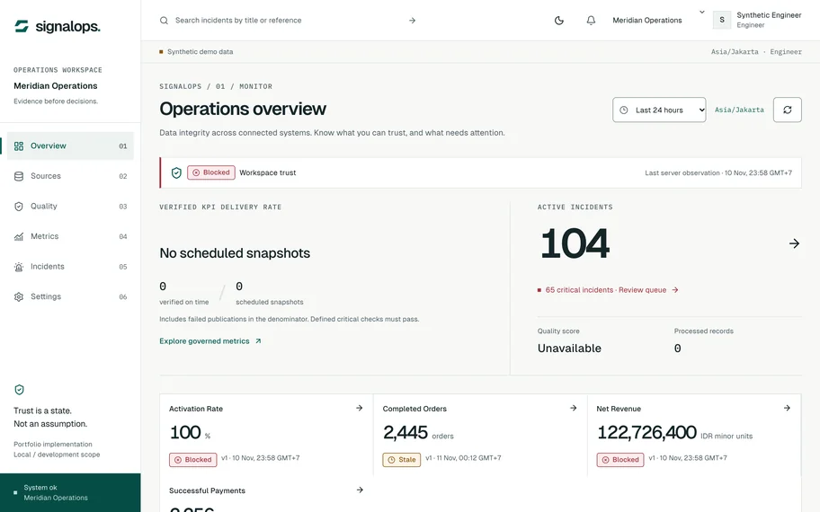

Same KPI, three different numbers.
1,848 KPI cells reconciled · 0 mismatchesSynthetic data · tested locally · not deployed
Read the case studySynthetic or simulated data, tested locally, not deployed. Each case study says what is not proven yet.
Same KPI, three different numbers.
1,848 KPI cells reconciled · 0 mismatchesSynthetic data · tested locally · not deployed
Read the case studyWhich customer gets which offer, and does it pay?
NDCG@5 0.818 → 0.911 · 95% CI [+0.079, +0.105]Offline, synthetic · not causal · not deployed
Read the case studyThe model has no price field.
0 of 60 briefs sent personal data to the modelSynthetic data · 101 backend tests · runs locally
Read the case studyApproval is where most tools stop.
AI extraction: 1 / 36, then 21 / 50 held out · gate failsSynthetic data · rule-based baseline · runs locally
Read the case studyWho will leave in 60 days, and why?
420 synthetic accounts · 85 testsOnly 16 churn events · no A/B test
Read the case studySupplier risk shows up only when stock runs low.
Delivery 40% · quality 35% · cost 25%120 synthetic orders · 9 suppliers
Read the case studyAn invoice can be paid before anyone checks it.
13 domain tests · a spec error caughtFrontend demo · synthetic · no OCR
Read the case studyWhere should the next network point go?
31 API tests · roles, GPS, audit, ROISimulated data · no field test
Read the case study
Data-reliability console: a failed check blocks publishing; a replayed batch cannot move a KPI.
Read the case study
IT change-request platform with an AI chatbot; selected for the faculty exhibition, Jan 2026.

Heart-disease risk from key health indicators. No accuracy or user figures until validated.

SVM, random forest and logistic regression against BERT on Google Play reviews.

Scroll-driven dashboard: participation, gender, national dominance, athlete build.

KNN separates look-alike seeds: outlier removal, feature selection, 80/20 split.

Strava-style activity analytics in vanilla JavaScript: distance, duration, intensity.

Habit tracker: activity schedule, food log, medication reminders.

Recipe search by ingredient or category, moderated comments, shopping lists.
Level: Prototype · synthetic dataCapstone
39 gaps · 11 criticalfound in my own spec
Reviewed my own retention spec and found 39 gaps, 11 critical, before rebuilding it. Decision Hub turns a free-text brief into seven sourced fields and one approvable quote revision. Business analyst on a capstone selected for the faculty exhibition.
Level: Built · tested locally
18SQL queries, each hand-checked
18 analytical queries — cohorts, funnel, gaps-and-islands, percentiles, YoY and MoM — each tested against results worked out by hand.
Level: Built · tested locally
53incremental runs match a full refresh
Star schema with a type-2 history and an accumulating snapshot. 53 incremental runs produce tables identical to one full refresh.
Level: Built · tested locally
1,848 KPI cells · 0 mismatcheschecked across SQL, BI model and dashboard
43 automated checks, with sabotage tests that must make them fail. 1,848 KPI cells compared across SQL, the BI model’s logic and the dashboard: 0 mismatches.
Level: Built · tested locally
1.9× to ~1,150×faster per query after indexing, one laptop
Before/after query plans on 800,100 synthetic orders: from 1.9× faster for a low-selectivity filter to about 1,150× for a composite index. One laptop, not production latency.
Level: Built · tested locallyPrototype · synthetic data
11KPIs, each defined once
Eleven KPIs defined once, with numerator, denominator, grain and caveats; Power BI-ready views and DAX measures — the DAX has not been run and there is no .pbix. Kinetix shows a supplier score you can take apart: delivery 40%, quality 35%, cost 25%.
Level: Internship
Field reportsmatched to live status
Cleaned and matched field-report data and built a monitoring dashboard that kept each report tied to its real-time status.
Level: Built · tested locally
600simulated experiments, coverage 92.5–97.5%
Pre-registered protocols and gates that run in order. A deliberately broken test is flagged invalid with no estimate shown; interval coverage stayed within 92.5–97.5% over 600 simulated experiments.
Level: Peer-reviewed · IEEEPrototype · synthetic data
NDCG@5 0.818 → 0.911offline ranking, not causal
CatBoost evaluated with F1, AUROC, AUPRC and Brier score and explained with SHAP, as first author. RetentionOS reports holdout by account and time, a naive baseline and calibration. LARAS ranks offers with NDCG@5 0.818 → 0.911 offline, labelled as not causal.
Level: Prototype · synthetic data
1 / 36, then 21 / 50held-out cases; gate still fails
The model fills seven fields and has no price field; a person approves one exact quote. Karsa keeps a held-out set: its rule-based extractor passes 24 of 24 dev cases but 1 of 36 unseen ones, so its release gate fails. Rewritten and tested on 50 more briefs, it reaches 21 of 50, still below the gate.
Builds run locally, not deployed. Newer ones were coded with AI agents under my direction.


Before any chart, I write down who will read it and what they must decide.
Which decision is this data for?
Fix, match, and document the rows first.
Try the simplest method that answers it, then test it.
Show the numbers, the limits, and the next step.
First author and presenter · ICICoS 2026, Universitas Diponegoro
CatBoost model; F1, AUROC, AUPRC and Brier score; explained with SHAP.
Read the paper on IEEE XploreBachelor of Informatics, School of Computing.
Business analyst, data analyst and applied AI roles or internships, in Bandung, Jakarta, or remote. I am at my best between understanding the business problem and building the system that makes the analysis usable.
They are working prototypes with automated tests, on synthetic or simulated data, and every case study says so; no client or business result is claimed. The newer builds were implemented with AI coding agents under my direction, and each case study states my role.